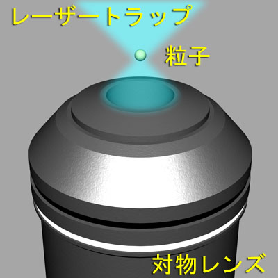

先に述べたように，生体分子はナノメートルレベルのとても小さい物体です．
これらがどのようなメカニズムで機能しているかを明らかにするためには，見ているだけではなく，捕まえたり，動かしたりすることが重要です．
そのためのツールの一つが，
レーザートラップ
なのです．
きちんとした原理を考えるのは非常にややこしいのですが，簡単に説明すると，
光を集光することにより，微小物体が引き寄せられる
という物です．
物理の人はきちんと電磁気学を解くことにより，その原理を理解できますが，生物物理では，上の説明で十分です．
ですので，
光を集光できれば，物が引き寄せられる．
引き寄せられた物体は，集光の中心で捕捉される
集光する場所を動かしたら，捕捉された物体も併せて動く
つまり，微小物体を捕捉し，操作することができる
ということになるのです．
では，具体的にどのように光を集光するかというと，
観察用の対物レンズにレーザー光を入射する
という物です．

対物レンズは普通の使い方では，サンプルからの光を集めて，結像する，という物ですが，これをレンズとして使うのです．
レーザーの集光点と対物レンズのフォーカスの位置は，ほぼ等しくなりますので，物体をトラップすれば，その像をカメラなどを通して観察できます．
レーザーをどのようにして対物レンズに入れるかは，少し工夫しなくてはなりません．
標準の顕微鏡は，レーザートラップ用にはできていませんので，トラップ用のレーザーを顕微鏡に入射する必要があります．
最近の顕微鏡は改造がしやくすなり，いろいろな光を入射させることのできるポートがあらかじめ用意されていますので，これを利用すれば，それほど難しくありません．
トラップ用のレーザーは基本的に，近赤外のレーザーを使います．
次に，なぜ焦点に物体がトラップされるのかを説明しましょう．